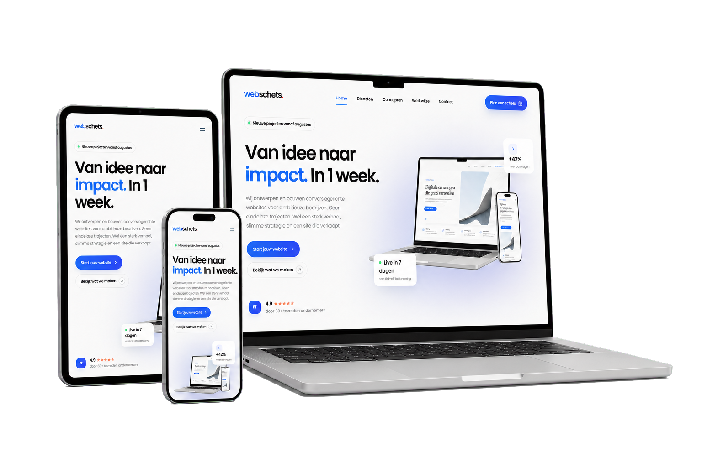

Strategie & conversie
We scherpen je aanbod, doelgroep en klantreis aan voordat er één pixel wordt ontworpen.
- Positionering en propositie
- Conversieplan
- Pagina- en contentstructuur
We bouwen een herkenbaar merk en een converterende website. Eén compact team verzorgt strategie, creatie en techniek. Daarna houden we alles veilig, snel en actueel.

ONTDEK ONZE EXPERTISE
Klik op een dienst en open de aparte pagina met onze aanpak, mogelijkheden en voordelen.
ALLES ONDER ÉÉN DAK
Vier disciplines die naadloos samenwerken. Zo houden we strategie, uitstraling, techniek en continuïteit vanaf het eerste idee in één lijn.
We scherpen je aanbod, doelgroep en klantreis aan voordat er één pixel wordt ontworpen.
Een uniek responsive ontwerp dat jouw merk herkenbaar maakt en bezoekers gericht naar actie leidt.
Razendsnelle, schaalbare techniek die nauwkeurig aansluit op het ontwerp en eenvoudig te beheren is.
Veilige managed hosting, technisch onderhoud en persoonlijke support vanaf € 49,95 per maand.

ELK SCHERM. DEZELFDE IMPACT.
Van groot beeldscherm tot telefoon: we ontwerpen en bouwen iedere website voor elk formaat. De inhoud, navigatie en conversie blijven daardoor overal helder, snel en prettig in gebruik.
01 · WEBDESIGN
We vertalen jouw merk, aanbod en doelgroep naar een heldere digitale ervaring. Geen standaard template, maar een herkenbaar ontwerp waarin iedere pagina bezoekers logisch naar contact, aankoop of aanvraag begeleidt.
02 · DEVELOPMENT
Het ontwerp wordt pixel-perfect gebouwd met schone, toekomstbestendige techniek. We letten op snelheid, toegankelijkheid en vindbaarheid, zodat de website niet alleen mooi oogt maar ook betrouwbaar presteert en eenvoudig te beheren blijft.
03 · HOSTING & ONDERHOUD
Na de lancering houden wij je website snel, veilig en actueel. Je hoeft niet zelf achter updates, back-ups of technische problemen aan: wij monitoren de basis en staan klaar wanneer je ons nodig hebt.
DRIE HELDERE ROUTES
Van een compacte start tot een volledig eigen digitale ervaring. Iedere route heeft een duidelijke scope, planning en investering.
Een compacte, doelgerichte website tot drie sterke pagina’s voor een professionele start.
Een unieke website tot vijf pagina’s, met strategie, copy-support en een heldere klantreis.
Meer content, slimme integraties en een schaalbare digitale basis voor groeiende bedrijven.
Altijd vooraf duidelijk. Scope, planning en investering worden vastgelegd voordat we starten.
STANDAARD INBEGREPEN
Je weet vooraf wat wij opleveren en wat we daarna voor je blijven verzorgen.
Van eerste richting tot livegangJe werkt met één compact team, een vaste planning en duidelijke feedbackmomenten.
GOED OM TE WETEN
Alles over planning, pakketten, content en wat er na de lancering gebeurt.
Na de voorbereiding bouwen we jouw website in één gereserveerde productieweek. Voorwaarde is dat input en feedback op de afgesproken momenten beschikbaar zijn.
Nee. Hosting en onderhoud zijn een aparte maandelijkse dienst, vanaf € 49,95 excl. btw. Daarmee regelen we onder andere SSL, back-ups, updates, monitoring en technische support.
Je levert de inhoudelijke kennis en beschikbaar beeldmateriaal aan. Wij helpen met structuur, aanscherping en webcopy. Nieuwe fotografie, stockbeelden of uitgebreide copywriting spreken we vooraf apart af.
Een technische SEO-basis is inbegrepen: een snelle structuur, paginatitels, metadata en een goede mobiele weergave. Doorlopende SEO, contentproductie en linkbuilding vallen buiten het standaardpakket.
Alleen wanneer je kiest voor werk buiten de afgesproken scope, zoals extra pagina’s, koppelingen, fotografie of aanvullende copy. We benoemen en begroten dit altijd vooraf.
Ieder ontwerp is maatwerk. We starten vanuit jouw merk, doelgroep en doelen en ontwerpen de pagina’s vanaf een blanco basis. Zo krijgt je website een eigen uitstraling in plaats van een aangepast standaardtemplate.
Basic (€ 1.495,- excl. btw) is een compacte professionele start. Launch (€ 3.495,- excl. btw) biedt meer strategie, content en conversieondersteuning. Scale (€ 4.999,- excl. btw) geeft extra ruimte voor pagina’s, slimme integraties en verdere groei.
Ja. We behouden wat waardevol is en vernieuwen strategie, structuur, uitstraling en techniek. Zo krijgt je bestaande website een nieuwe basis zonder onnodige ballast.
Op aanvraag richten we een gebruiksvriendelijk beheersysteem in. Daarmee kun je veelgebruikte inhoud zoals teksten, afbeeldingen en projecten zelf aanpassen, zonder code. We spreken de mogelijkheden en eventuele kosten vooraf met je af.
We controleren de live website en blijven beschikbaar voor technische vragen. Met hosting en onderhoud verzorgen we daarna ook updates, beveiliging, back-ups en monitoring.
VAN PLAN NAAR RESULTAAT